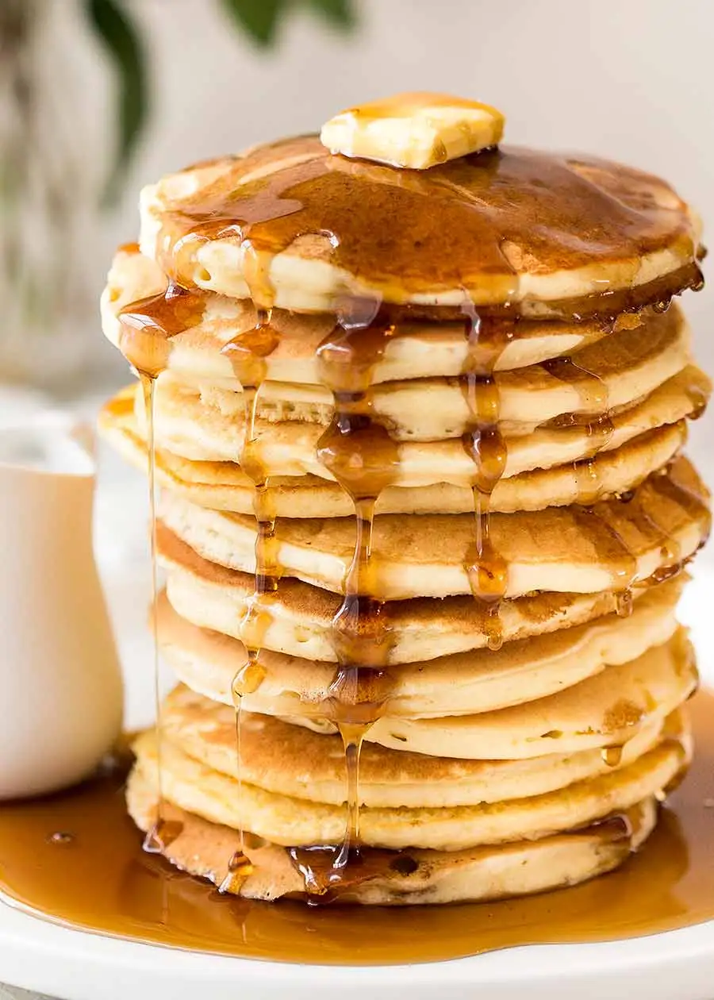

Pour des pancakes : 250 g de farine 30 g de sucre semoule 2 œufs 1 sachet de levure traditionnelle 65 g de beurre doux 1 pincée de sel 30 cl de lait
+--------------------------------------+ |Temps de préparation : 5-10 minutes | |Temps de pousse : Aucun | |Temps de repos de la pâte : 1 heures | |Temps de cuisson : 4 minutes | +--------------------------------------+
Description : Faire fondre le beurre dans une casserole à feu doux ou dans un bol au micro-ondes. Mettre la farine, la levure et le sucre dans un saladier, puis, mélangez et creuser un puits. Ajouter ensuite les œufs entiers et fouetter l'ensemble. Incorporer le beurre fondu, fouetter puis délayer progressivement le mélange avec le lait afin d'éviter les grumeaux. Laisser reposer la pâte au minimum 1 heure au réfrigérateur. Dans une poêle chaude et légèrement huilée, faire cuire comme des crêpes, mais en les faisant plus petites. Enfin réserver au chaud et déguster.
